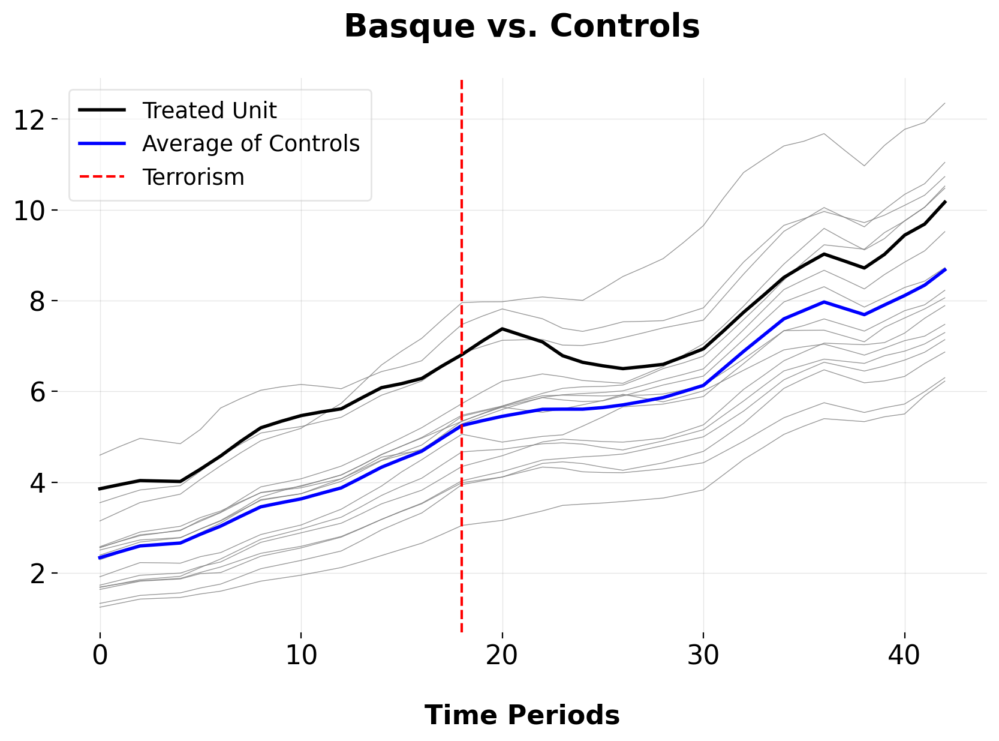
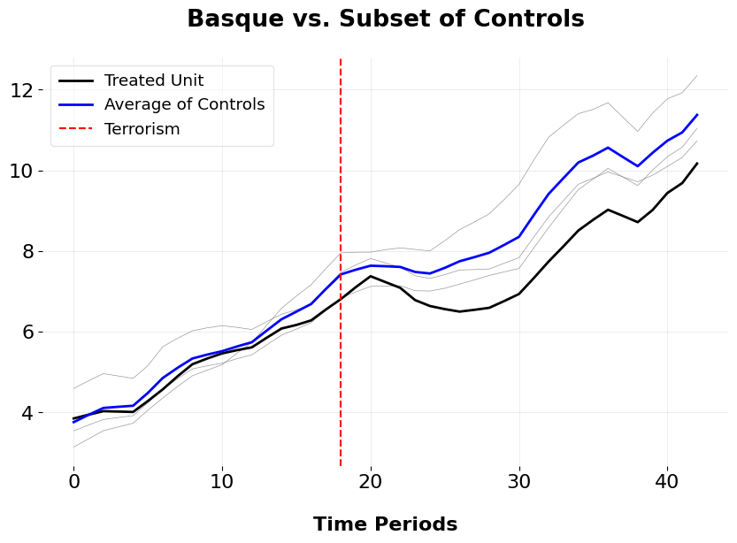
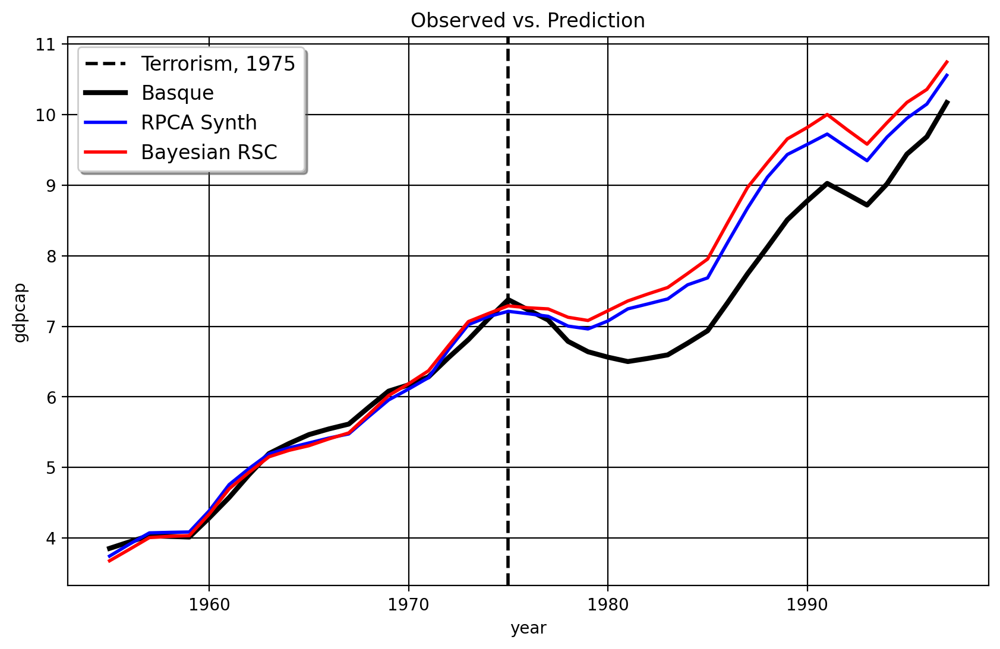
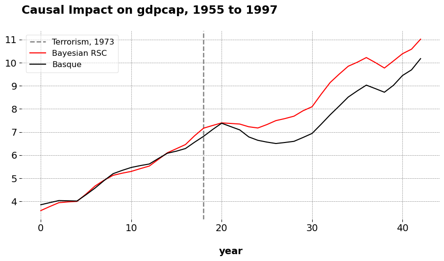
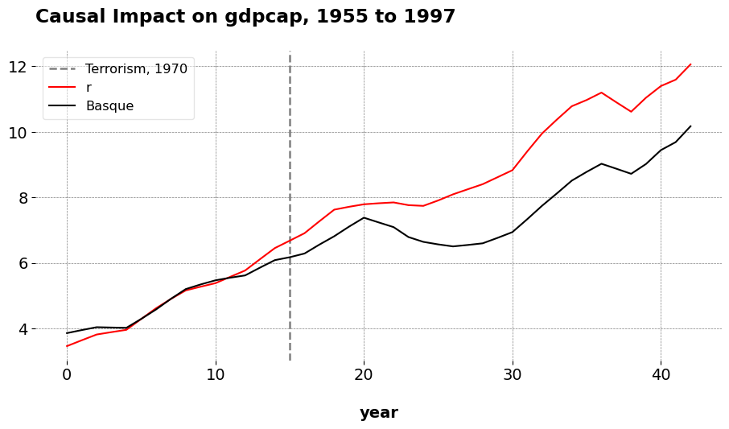

On Clustering for Synthetic Controls
Causal Inference
Machine Learning
Picking a donor pool is very important with the synthetic control method. The vanilla method suffers from interpolation biases in the case when the donor pool is not suitable for the target unit. This is farily common with applied SCM in real life, as oftentimes we may have a high-dimensional donor pool and not know what the right control units would be a priori. The standard advice given in this instance is to limit our control group to units that are already similar to the target unit. But how do we do this? One way is to use clustering methods to select the control group. Consider the classic Basque Country example below, where the Basque Country undergoes a wave of terrorism in the mid-1970s which is thought to impact their GDP per Capita relative to other areas of Spain.
Here, we plot the Basque versus the average of its controls as well as the individual donor outcome vectors themselves. We can see that the Basque Country is one of the wealthiest areas of Spain, up there with Madrid, Cataluna, and the Balearic Islands. We have other donors too, which by comparison are less wealthy. The key, then, is to ask which donors we should select for the synthetic control algorithm to consider in the first place, by exploiting pre-intervention similarities between the treated unit and control group. With “better” pre-policy donors, there is a higher chance that our out-of-sample predictions would be closer to the actual counterfactual.
Time-Series Clustering for Synthetic Controls
To begin, we apply singular value decomposition (SVD) to the outcomes matrix \(\mathbf{Y}_0 \in \mathbb{R}^{T \times N_0}\), yielding
\[
\mathbf{Y}_0 = \mathbf{U} \mathbf{\Sigma} \mathbf{V}^\top,
\] where \(\mathbf{U} \in \mathbb{R}^{T \times T}\) contains the left singular vectors, \(\mathbf{\Sigma} \in \mathbb{R}^{T \times N_0}\) is the diagonal matrix of singular values, and \(\mathbf{V} \in \mathbb{R}^{N_0 \times N_0}\) contains the right singular vectors. To obtain a low-dimensional representation, we truncate at rank \(r\), keeping only the top \(r\) singular values:
\[
\mathbf{L} = \sum_{i=1}^{r} \sigma_i \mathbf{u}_i \mathbf{v}_i^\top.
\] The transformed representation is then defined as
\[
\tilde{\mathbf{U}} = \mathbf{U}_r \mathbf{\Sigma}_r,
\] where \(\mathbf{U}_r\) consists of the first \(r\) columns of \(\mathbf{U}\) and \(\mathbf{\Sigma}_r\) is the truncated diagonal matrix containing the top \(r\) singular values. We then perform k-means clustering over the rows of \(\mathbf{U}_r\), which correspond to the time-series patterns of the units in the reduced-rank space. We seek to partition the units into \(k\) clusters by minimizing the within-cluster variance: \[
\underset{P}{\operatorname*{argmin}} \sum_{j=1}^{N_0} \min_{c \in [k]} \|\mathbf{U}_{r,j} - P_c\|^2,
\] where \(\mathbf{U}_{r,j}\) is the \(j\)-th row of \(\mathbf{U}_r\) and \(P_c\) represents the cluster centers. The number of clusters is chosen using the silhouette method in . Each unit is assigned a cluster, and the donor pool consists of all control units that belong to the same cluster as the treated unit. We now apply the SCM estimator. The weight vector \(\mathbf{w}\) is obtained by solving
\[
\underset{\mathbf{w} \in \mathbb{R}^{n_A}}{\operatorname*{argmin}} \lVert \mathbf{y}_1^- - \mathbf{w}^\top \mathbf{A}^- \rVert_2^2,
\] where \(n_A\) is the number of control units in the selected donor pool, and \(\mathbf{A}^-\) is the matrix of their corresponding outcomes in the pre-intervention period. For the FPCA method, see the documentation for , which implements a functional data version of this method.
Estimating the Causal Impact
We may now estimate the impact with either PCR or another robust matrix factorization method similar to how Mani did in his dissertation. We use an iterative algorithm to extract the low-rank structure of our new donor pool. Mani uses what we would call Principal Componenet Pursuit, but another such method is non-convex half-quadratic regularization (HQF), which I implemented for Python from the original MATLAB code. HQF is a form of Robust PCA, a general class of methods which aims to decompose the observed noisy matrix \(\mathbf{Y}_0\) into a low-rank matrix \(\mathbf{L}\) and a sparse matrix \(\mathbf{S}\), such that \(\mathbf{Y}_0 = \mathbf{L} + \mathbf{S}\), where \(\mathbf{L} = \mathbf{U} \mathbf{V}^{\top}\) represents the low-rank approximation, and \(\mathbf{S}\) models the sparse noise. The optimization proceeds iteratively by updating \(\mathbf{U}\), \(\mathbf{V}\), and \(\mathbf{S}\). The matrices \(\mathbf{U}\) and \(\mathbf{V}\) are initialized randomly with dimensions \(m \times r\) and \(n \times r\), respectively. The matrix \(\mathbf{D} = \mathbf{Y}_0 - \mathbf{S}\) is initialized as \(\mathbf{Y}_0\), assuming that \(\mathbf{S}\) is initially zero. The scale \(\sigma\) is initialized based on the median absolute deviation of the residuals, and \(\mathbf{S}\) is updated later using this noise model. For all of the super technical details of this, see the original paper.
The low-rank approximation \(\mathbf{L}\) is computed as the product \(\mathbf{U} \mathbf{V}^{\top}\). The update equations for \(\mathbf{U}\) and \(\mathbf{V}\) are: \[ \mathbf{U} = \left( \mathbf{D} \mathbf{V}^{\top} - \lambda_1 \mathbf{U}_p \right) \left( \mathbf{V} \mathbf{V}^{\top} - \lambda_1 \mathbf{I} \right)^{-1} \] where \(\mathbf{D} = \mathbf{Y}_0 - \mathbf{S}\) and \(\mathbf{U}_p\) is the previous value of \(\mathbf{U}\) and \[ \mathbf{V} = \left( \mathbf{U}^{\top} \mathbf{U} - \lambda_2 \mathbf{I} \right)^{-1} \left( \mathbf{U}^{\top} \mathbf{D} - \lambda_2 \mathbf{V}_p \right) \] where \(\mathbf{D} = \mathbf{Y}_0 - \mathbf{S}\) and \(\mathbf{V}_p\) is the previous value of \(\mathbf{V}\). These updates minimize the approximation error in the low-rank structure of \(\mathbf{Y}_0\). In our case, both lambdas are chosen as \(\lambda = \frac{1}{\sqrt{\max(m, n)}}\) where \(m\) is the number of rows and \(n\) is the number of columns for the selected donor matrix.
After updating \(\mathbf{U}\) and \(\mathbf{V}\), the next step is to update the sparse noise matrix \(\mathbf{S}\). This update is based on the residual \(\mathbf{T} = \mathbf{Y}_0 - \mathbf{L}\), identifying large residuals that are likely to represent noise. This process involves the calculation of a scale factor \(\sigma\) that helps to identify large residuals from the matrix \(\mathbf{T} = \mathbf{Y}_0 - \mathbf{L}\). The scale \(\sigma\) is initialized based on the median absolute deviation of the residuals \[ \sigma = 10 \times 1.4815 \times \text{median}(\left| \mathbf{T} - \text{median}(\mathbf{T}) \right|). \] where \(\mathbf{T}\) represents the residual matrix, and \(1.4815\) is a constant that converts the median absolute deviation to an estimate of the standard deviation of the noise term. \(\sigma\), serves as a threshold for identifying significant deviations in the data that are considered noise. Then, \(\mathbf{S}\) is updated by retaining only the large residuals: \[ \mathbf{S} = \mathbf{T} \circ \mathbf{Q}_1 \] where \(\circ\) denotes the element-wise multiplication, and \(\mathbf{Q}_1\) is a binary matrix with entries of 1 for residuals whose absolute deviation exceeds \(\sigma\) and 0 otherwise. After updating \(\mathbf{U}\), \(\mathbf{V}\), and \(\mathbf{S}\), the algorithm checks for convergence by monitoring the change in the Frobenius norm of the observed data versus the summation of its low-rank structure and the noise term: \[ \text{RMSE}[t] = \frac{\| \mathbf{Y}_0 - \mathbf{L} \|_F}{\sqrt{m \cdot n}} \] If the change in RMSE between consecutive iterations is smaller than a predefined threshold (in our case, \(1 \times 10^{-6}\)), the algorithm terminates early. With the low-rank structure in hand, we then exploit only the pre-intervetion portion of it to serve as the denoised donor pool. Now we do the SCM optimization to weigh our control group
\[ \begin{split}\begin{align} \underset{w}{\text{argmin}} & \quad ||\mathbf{y}_{1} - \mathbf{L} \mathbf{w}^{\top}||_{2}^2 \\ \text{s.t.} \: & \mathbf{w}: w_{j} \in \mathbb{R}_{\geq 0} \end{align}\end{split} \] As ususal, we take the dot product between the solution weight vector and the low-rank structure. Those predictions are our in and out of sample predictions.
Plotting Our Selected Donors

Here we plot the Basque Country versus its selected donors. We can see that these donors (Cataluna, the very closest grey line in Euclidean distance to the Basque Country), Madrid, and the Balearic Islands are much more similar to the Basque Country than the other 13 control units. Both fPCA-clustering implemented in Mani’s dissertation and the clustering over the right singular vectors choose the same donor pool when the pretreatment period extends up to 1975.
The Counterfactuals
Here are the estimated synthetic controls using Bayesian PCR and HQF-SCM (note that again, we’re only using these three chosen donors, not the full 16 unit donor pool).
import pandas as pd
import matplotlib.pyplot as plt
from mlsynth.mlsynth import dataprep
from mlsynth.mlsynth import CLUSTERSC
import matplotlib
import numpy as np
file = 'https://raw.githubusercontent.com/jgreathouse9/mlsynth/refs/heads/main/basedata/basque_data.csv'
# Load the Basque Data from my repo
df = pd.read_csv(file)
df["Terrorism"] = (df["regionname"].str.contains("Basque", case=False, na=False) & (df["year"] >= 1975)).astype(int)
treat = "Terrorism"
outcome = "gdpcap"
unitid = "regionname"
time = "year"
config = {
"df": df,
"treat": treat,
"time": time,
"outcome": outcome,
"unitid": unitid,
"display_graphs": True,
"Robust": "HQF",
"Frequentist": False
}
model = CLUSTERSC(config)
arco = model.fit()
As we can see the results between HQF-SYNTH and PCR generally agree (note I’m using the Bayesian Ridge regression that Amjad and co advocate for in their paper). You the reader may say “well okay Jared, these results seem to agree. Why do we care about one versus the other?” The truly interesting thing, of course, happens when we do in-time placebos. Here is the result for 1973

and the next one for 1970

As we can see from these figures, the original Robust SCM (Bayesian or not!), the model seems to overfit to the pre-intervention period. The fit becomes terrible from the 1970 period to the 1975 period with the RSC/PCR method with the treatment year of 1970, leading to an inflated effect size. Also, the clustering over the right singular vectors, with the 1970 treatment date, selects only Cataluna and Madrid as the donors. The weights given to both are 0.516, which is almost equuivalent to the DID method which assigns proportional weights to the control units. In contrast, the HQF-SCM method doesn’t change very much at all when we use the alternate treatment dates. This suggests that more sophisticated robust matrix factorization like Robust PCA/HQF methods plus clustering routines are competitive, at least, to the PCR method, since their effect sizes (in this case) is quite robust to the in-time placebo test. The practical conclusions of the HQF-SCM method remains the same as the original SCM which studied this question.
Takeaways for Practitioners
The meaning of these results are quite simple: donor selection matters for SCM studies. In fact, simple machine-learning donor selection methods can oftentimes give the same or similar answers to classical studies which oftentimes used covariates (in the original SCM paper, Abadie and his advisor used 13 covariates to construct the counterfactual, returning Cataluna and Madrid as the weighted donors). I say oftentimes because these results are predicated on both assumptions and tuning parameters. We assume, for example, some low rank approximation exists that can fit the pre-intervention time series of the treated unit. The tuning parameters matter too– the lambda parameters control the sparisty of our results, for example. I use a simple herustic to tune it, but it may be more reasonable to use methods such as cross-validation to select the number of clusters or the values lambda should take, but this would demand simulation evidence.
Either way, the main benefit for policy analysts is that these two methods offer ways to select a donor poor for synthetic control methods, on top of not needing to collect auxilary covariates that the original paper used to obtain very similar counterfactual predictions, and more work should be done on these estimators to see when and why they’d agree.
Artificial Counterfactuals in Dense Settings: the \(\ell_2\) relaxer
Causal Inference
Econometrics
Data Science for Policy Analysts: A Simple Introduction to Web Scraping
Web Scraping
Python
Applying Forward DID to Construction and Tourism Policy
Causal Inference
Machine Learning
Econometrics
Causal Inference Runs the World: Actionable Insights, Econometrics Style
Econometrics
Causal Inference
Data Science
Forward Selected Synthetic Control
Machine Learning
Econometrics
The Synthetic Regressing Control Method for Python
Causal Inference
Econometrics
Synthetic Controls With More Than One Outcome
Causal Inference
Econometrics
Synthetic Control Methods for Personalized Causal Inference
Causal Inference
Econometrics
Synthetic Controls Do Not Care What Your Donors Are. So Why Do You?
Econometric Theory
No matching items